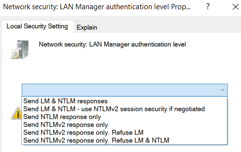

How work Authentification in a Windows Network
Windows uses a variety of
challenge-response authentication protocols for authentication across the network using
LANMAN
and NT
hashes, including:
•
LANMAN Challenge/Response:
LANMAN and LANMAN
Challenge/Response are not the same thing:
◇ LANMAN is the method used to store passwords in the SAM database
on the end system
◇ LANMAN Challenge/Response is a network authentication protocol that clients use to
authenticate to a domain or an individual server.
LANMAN Challenge/Response is derived using the LANMAN hash,
but it is a different thing
•
NTLMv1, NTLMv2 Challenge/Response: NT hashes and NTLMv1
and NTLMv2 are not the same thing:
◇ NT hash algorithm creates the hash for the SAM database
◇ NTLMv1
and NTLMv2 are across-the-network authentication protocols that rely on the NT hash
•
Microsoft
KerberosAuthentication on Windows • By default
Kerberos is used
•
NTLM will only be used if:
◇ there isn't any
Active Directory configured
◇ the Domain doesn't exist
◇ Kerberos isn't working (bad
configuration)
◇ the client that tries to connect using the IP instead of a valid
host-name.
Configure which protocol will be used
•
GUI Execute secpol.msc → Local policies → Security Options → Network
Security: LAN Manager authentication level
•
Registry This will set the level 5:
reg add HKLM\SYSTEM\CurrentControlSet\Control\Lsa\ /v lmcompatibilitylevel /t REG_DWORD /d 5 /f
Possible values:
0 - Send LM & NTLM responses
1 - Send LM & NTLM responses, use
NTLMv2 session security if negotiated
2 - Send NTLM response only
3 - Send NTLMv2 response only
4
- Send NTLMv2 response only, refuse LM
5 - Send NTLMv2 response only, refuse LM &
NTLM
How work the Challenge/Response
1. Client send an
authentication request which contain the username(in plaintext)
2. Server generates a 8-byte
Challenge (random value) and sends it back to the client
3. Client encrypts the challenge
using the password and
Response back with the results of the computation to the
server
Bibliography:https://book.hacktricks.xyz/windows/ntlm